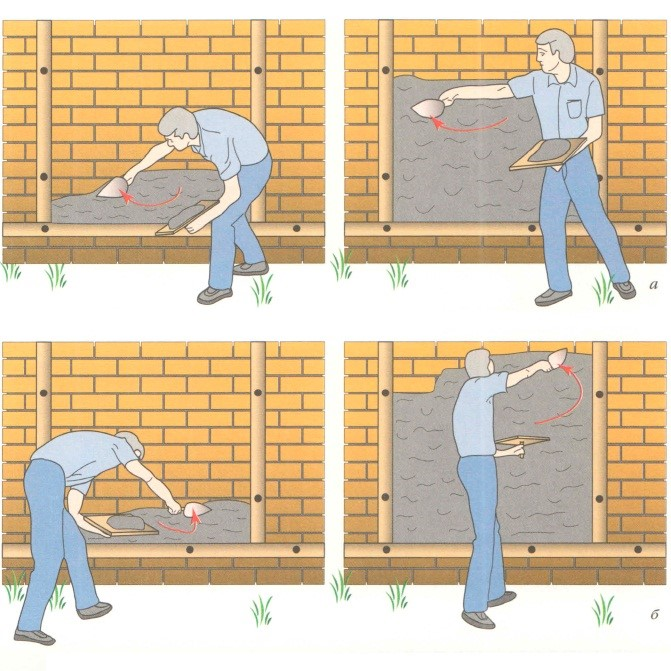
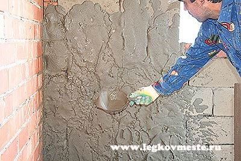
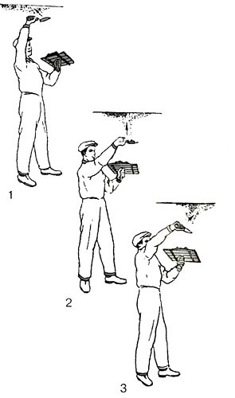
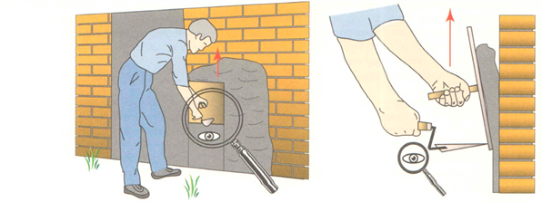
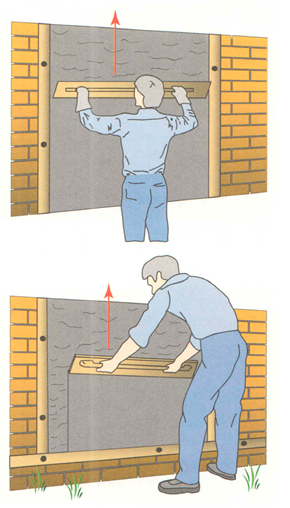
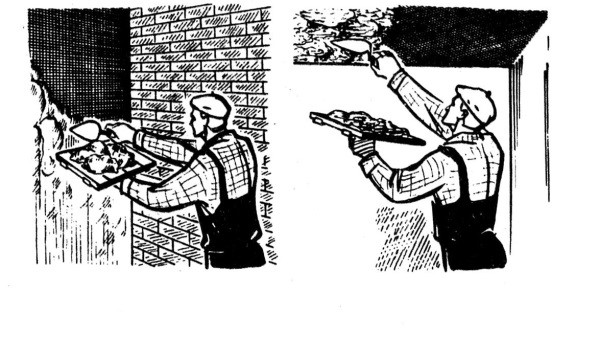
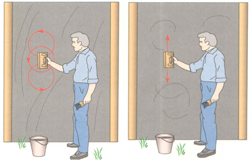

Технология нанесения раствора
Набрасывания раствора на стену
1. Набрасывание раствора штукатурной лопаткой с сокола
Штукатурную лопатку с раствором подносят к стене, кистью руки делают взмах кельмой с резкой остановкой, при этом раствор слетает на поверхность стены.

2. Набрасывание раствора ковшом на стену
При оштукатуривании стен передвижной ящик устанавливают на расстоянии 1 м от стены, ковш берется в правую руку, им забирают порцию раствора и сильным взмахом руки сбрасывают раствор на поверхность. Движению руки с ковшом необходимо придать такую силу, чтобы раствор вылетал из ковша, не задерживаясь в нем, и расстилался по поверхности веером.

Набрасывание раствора на потолок
При оштукатуривании потолка раствор набрасывается следующими способами:
- через плечо;
- над собой;
- через себя.
Броски могут быть широкими, узкими, толстыми или тонкими. Для того чтобы броски были широкими и тонкими, необходимо взмах кельмой делать очень резко, а при узких и толстых — плавным.

1 — через плечо, 2 — над собой, 3 — от себя
Порядок размещения материалов и инструментов на рабочем месте зависит от вида отделочной поверхности и от способа устройства штукатурных слоев.
1. При набрасывании штукатурного слоя на стену лопаткой с сокола у места набрасывания раствора устанавливают ёмкость с раствором. Раствор берут небольшими порциями, которые держат на соколе. Рядом устанавливают ведро с водой.
2. При набрасывании раствора на стены из ёмкости, раствор устанавливают недалеко от стены.
3. При намазывании раствора на стену на расстоянии не менее 1 метра от стены, ёмкость устанавливают справа от себя.
4. При набрасывании раствора на потолок, ёмкость с раствором устанавливают под местом наброски раствора.
В ходе нанесении раствора на поверхность ящик с раствором передвигают за собой, вдоль фронта работ.
По окончании работы необходимо рабочее место убрать от остатков раствора и привести в порядок инструменты.
Приемы намазывания раствора
При работе с соколом в одну руку берут сокол, в другую - мастерок. На сокол набирают раствор и приставляют его к стене так, чтобы верхний край щита сокола отстоял от поверхности на 50-100 мм, а нижний был прижат к поверхности на толщину наносимого слоя. На сокол нажимают концом мастерка, упертым под шпонку сокола, и перемещают его. По мере продвижения сокола раствор намазывается на поверхность, а приподнятый второй край сокола постепенно прижимается к ней.

При работе с полутерком на него грядкой накладывают раствор, подходят к поверхности стены, приставляют к ней полутерок, нажимают и ведут по стене снизу вверх. Ширина полотна полутерка должна быть 1200 мм, чтобы на нем можно было удержать больше раствора.

Намазывание штукатурки лопаткой. Лопаткой раствор намазывают в основном по сетчатым поверхностям. Предварительно сетку обрызгивают раствором, он схватится и сетка прекращает вибрировать. Только после этого приступают к намазыванию. На сокол набирают штукатурку с волокнистыми добавками,который затем намазывают на оштукатуриваемые поверхности тыльной стороной лопатки. Если штукатурку намазывают на стену, то сокол приставляют к стене, быстрым движением тыльной стороны лопатки сдвигают с сокола порцию раствора и намазывают его тонким слоем на поверхность. Мазки раствора делают вертикальные или горизонтальные. На потолок раствор намазывают точно так же, как и стены. Во время намазывания сокол продвигают вслед за лопаткой, чтобы подбирать штукатурку. Намазывая штукатурку лопаткой или другим инструментом, следует заботиться о том, чтобы придать намазываемому штукатурному слою шероховатость. Это необходимо для того, чтобы он имел хорошее сцепление с последующими слоями штукатурки.

Приемы затирки раствора
Затирка удаляет следы от полутерка, ею выравнивают бугры и ямы. Пересохшую накрывку смачивают с кисти водой и затирают. Смачивать нужно не сильно, так как намокшую штукатурку затереть будет невозможно. После затирки накрывка должна стать ровной и гладкой, без раковин, бугров и следов штукатурных инструментов.
Затирку делают «вкруговую » и «вразгонку». При затирке вкруговую терку прижимают полотном к штукатурке и выполняют ею круговые движения по часовой и против часовой стрелки. При этом бугорки раствора срезаются, а ямки заполняются раствором. Одновременно терка уплотняет раствор. В тех местах, где на штукатурке видны выступы, следует сильнее нажимать на терку, а где впадины - ослаблять нажим. Терку нужно периодически мыть или смачивать.

При затирке вкруговую на поверхности остаются кругообразные следы. Чтобы их не было, штукатурку дополнительно затирают вразгонку. Её делают по свежей затирке вкруговую. Сначала затирают вкруговую примерно 1 м2 поверхности и тут же производят затирку вразгонку. На затертой поверхности не должно быть бугров и пропущенных мест.
Приемы заглаживания раствора
При заглаживании наносят накрывку, хорошо разравнивают полутерком и затем заглаживают гладилкой в двух направлениях.Стены заглаживают сначала в вертикальном, а затем в горизонтальном направлениях
Потолки заглаживают сначала против света, затем по свету, т.е. в направлении окон.